Cold War | Visual Storytellign
The Cold War in Photographs
Visual story about the history of the Cold War; a series of some notable events.
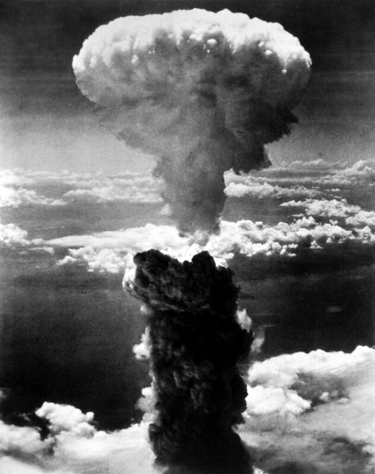
Cloud from the Atom Bomb in Nagasaki (1945)
The atom bomb is one of the hallmarks of the Cold War. The destructive potential of these bombs made the stakes of war so high that making the 'cold war' hot would have unimaginable results.
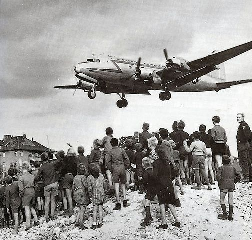
A Douglas C-54 'raisin bomber' in late 1940s.
Shortly after the Second World War tensions between the USSR and 'the West' grew high.
Germany had been divided into occupational zones. An American weakpoint was West Berlin: it was right in the middle of the USSR's territory.
When the USSR locked all roads in '48, the USA supplied West Berliners with air-droppings like packets of raisins from this bomber.
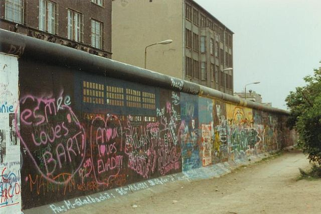
Berlin Wall, the '80s
Berlin was the most symbolic city during the Cold War: the USA occupied the West, and the USSR its Eastern part.
The film Das Leben der Anderen, portrays the contemporary life in East Berlin quite well; it showcases that anybody could be spied on by the USSR's secret police (the 'Stasi' polici in Germany).
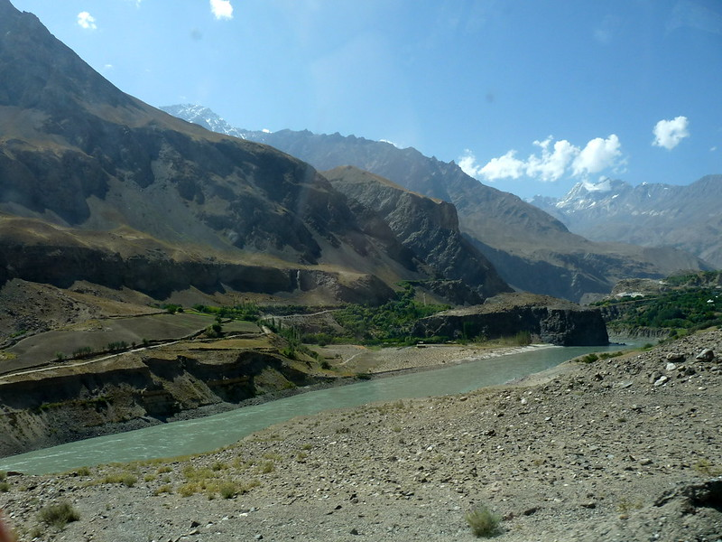
The Hills of Afghanistan (present day)
The Soviet Union invaded Afghanistan in 1979. It illustrates how the entire world (even the Middle East) was involved in the Cold War.
The Arab Cold War, Iran-Saudi Arabia conflict, Yom Kippur War and Russia-Turkey conflict are a handful of other instances of the 'Middle Eastern Cold War'
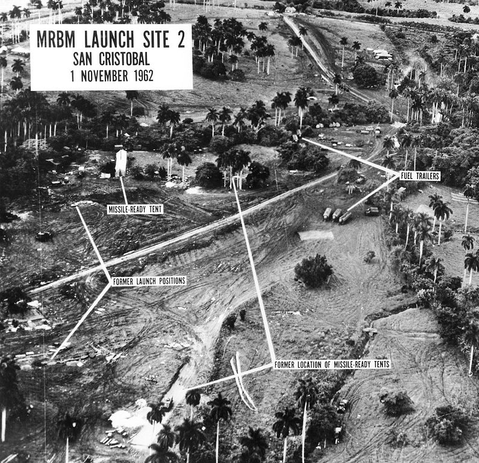
Surveillance photograph of Cuban missile facilities
In 1962, the USA found out that the USSR had installed atomic missile launch platforms in Cuba.
The USA were alarmed by the thought of having missiles 'in their backyard'. That's why they blockaded all USSR's naval traffick to Cuba: they disabled them from arming the platforms with actual missiles.
The USSR's forceful advance through USA's naval blockade was called off at the last moment. But, the tensions were tremendously high during this event. That's why it's called The Cuban Missile crisis.
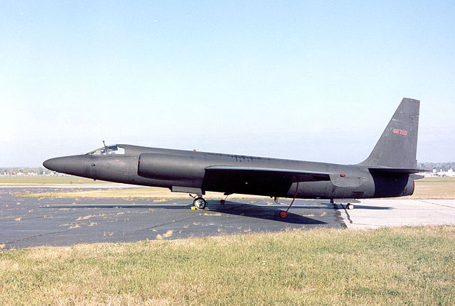
A U-2 Lockheed aeroplane.
The previous surveilance photo was made with a U2 aeroplane (above). It's one of the many ways in which the East and West spied on each of their counterpart's moves.
Human intelligence was at an all-time-high during the Cold War. That's why so many spy films and books (think James Bond and Tinker Tailor Soldier Spy) were made during the cold war.
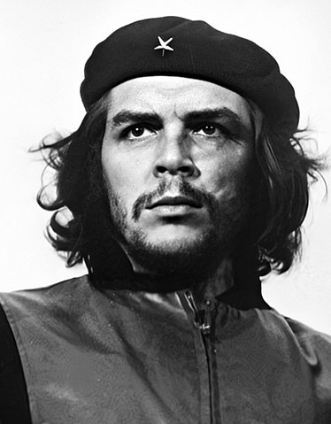
Che Guevara
The USA' active Cold War policy was 'Containment': they wanted to prevent their allied nations from falling to Communism. They strongly feared public revolts that could overturn their nation's governments and make it Communist.
'Containing' the sphere of USA's influence was of paramount importance, as every fallen nation could instill a 'Domino effect' of more countries following suit.
The Bay of Pigs in Cuba incident relates to the USA's active approach in the internal politics of nations all across the world. Cuban rebel leader Che Guevara (above) was one of the USA's most notable public enemy in the Cold War.
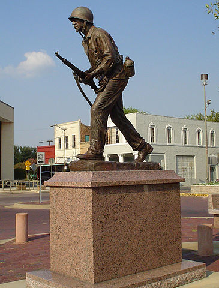
Vietnam War Memorial in Hopkins County, Texas
Vietnam is another example of USA's containment policy. When you think of the Cold War, the Vietnam War might be the first thing that pops into your mind.
In America, public opinion about the Vietnam grew steadily more negative. While Vietnam veterans were not warmly welcomed by the American public at their return, their war-time stories gained massive interests in a couple of years after the conflict.
Many classic films such as Forest Gump and Apocalypse now delve into the psychology of the individual soldier, which is one of the hallmarks of New Military history (instead of documenting massive open battles, the personal experience became more important).
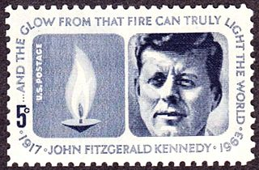
Stamp of American president John F Kennedy
John Kennedy (above) was murdered, but it is uncertain which party is behind the attack.
The public was divided over JFK's presidency. He is - among other things - famous for his speech 'Ich bin ein Berliner' in Berlin.
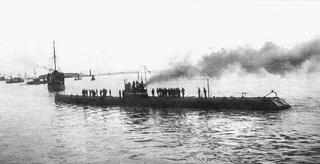
The Russian Submarine Yorsh
Submarine is an under-appreciate aspect of the Cold War. They did crucial intelligence mission, could carry atomic missiles and they provided excellent naval threat- and support.
Submarine warfare is one of the many ways in which the way of waging war had changed in the Cold War (besides proxy war, the destructive potential of weapons, contemplations about public opinion and more).
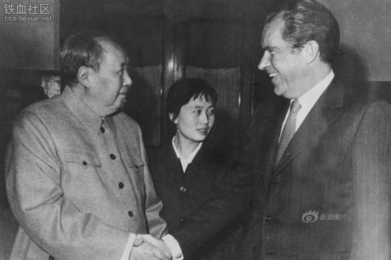
Mao Zedong (China, left), Richard Nixon (USA, right) meet
At the start of the Cold War, China and the USSR were allies. But, in the 70s, China had aspirations of being a superpower similar to USA or the Soviet Union.
It resulted in China's cooperation with the USA. One of these Sino-American meetups resulted in the term 'Ping-pong diplomacy'.
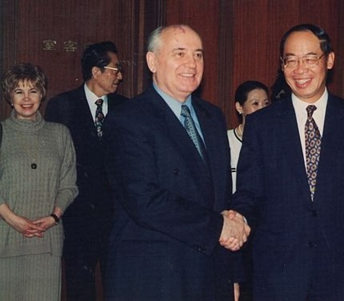
Soviet Union's leader Mikhail GOrbatchev
Gorbachev realised that the long-term plan of the USSR was a lost cause. It was sturggling behind the USA in terms of economic strength and was losing its grip on 'sattelite states' / its spheres of influence.
Gorbachev is a a heated topic within the country of Russia: in the world he has been seen as the achiever of peace, but in Russia people have not been as happy about his efforts.